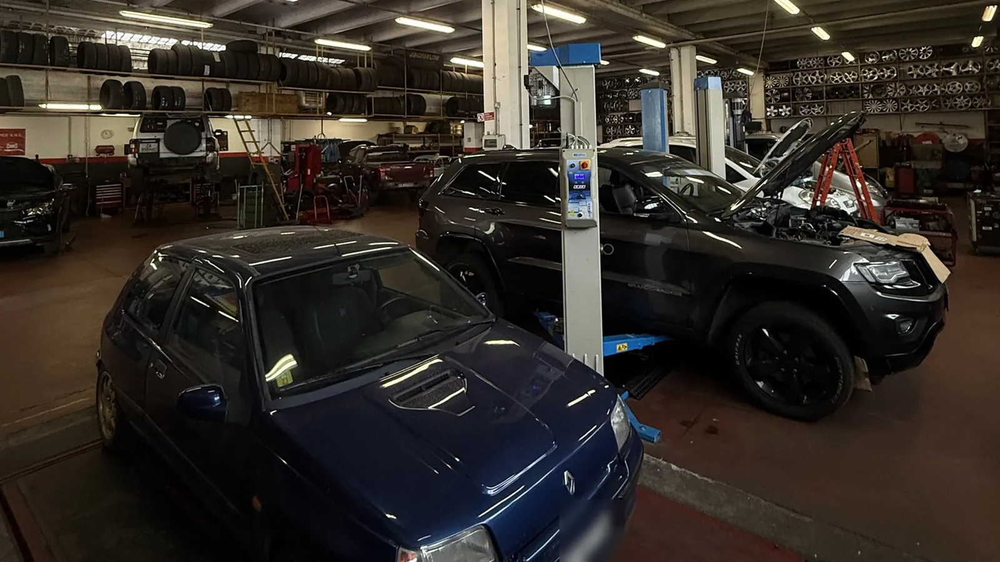

Come si arriva
Da Aosta statale 26 verso Nus, uscita Saint-Marcel: circa un quarto d'ora. Dall'autostrada A5, uscita Nus. Siamo in Zona Industriale 9.

Tagliandi, freni, frizione, distribuzione e diagnosi guasti per ogni marca. Preventivo scritto prima di iniziare, dal 1986.
Veniamo cercati come "meccanico Aosta" e la risposta onesta è: siamo a Saint-Marcel, poco fuori città. Dieci minuti di statale che in cambio danno un'officina dove ci si conosce per nome, un preventivo scritto prima di ogni lavoro e quarant'anni di esperienza sulle stesse strade che fai tu.
Da Aosta statale 26 verso Nus, uscita Saint-Marcel: circa un quarto d'ora. Dall'autostrada A5, uscita Nus. Siamo in Zona Industriale 9.
Chiami o scrivi su WhatsApp, ti diamo giorno e ora: la macchina entra e si lavora subito, senza fila. Lun–ven 8:00–13:00 e 15:00–19:00, sabato 8:00–12:30.
Guardiamo la macchina, ti diciamo cosa serve e quanto costa. Il lavoro parte dopo il tuo sì, e se salta fuori dell'altro ti chiamiamo prima di toccarlo.
La pagina completa del settore, con galleria e casi seguiti: Officina meccanica.
Olio, filtri e controlli come da libretto, con la registrazione del tagliando. Anche in garanzia.
Pastiglie, dischi, liquido e controllo dell'impianto. Ti diciamo quanto resta prima di cambiare.
Cinghia o catena di distribuzione, pompa acqua, frizione e volano: i lavori grossi, con preventivo chiaro.
Spia accesa, rumore strano, auto che non parte: cerchiamo la causa prima di cambiare pezzi a caso.
Controlliamo quello che la revisione controlla, e sistemiamo prima. Così la passi al primo colpo.
A Saint-Marcel, in Zona Industriale 9: una decina di chilometri da Aosta lungo la statale 26, circa un quarto d'ora. Molti dei nostri clienti vengono da Aosta e dintorni.
Sì: auto di tutte le marche, con la diagnosi computerizzata e i ricambi originali o equivalenti, a scelta tua sul preventivo.
Dipende da auto e chilometri: ti facciamo il preventivo scritto prima, con ricambi e manodopera separati. Chiama o scrivici con targa e chilometri e te lo prepariamo.
Per un tagliando o i freni di solito no: con l'appuntamento la macchina entra all'ora fissata e la riprendi in giornata. Per i lavori grossi ti diciamo subito quanto ci vuole.
Sì, nella stessa officina: gommista con deposito pneumatici ed elettrauto. Un posto solo per tutto, e il preventivo lo fai una volta.
Chiama lo 0165 768675 o scrivici su WhatsApp: ti diamo un appuntamento e un preventivo scritto.
Richiedi un preventivo